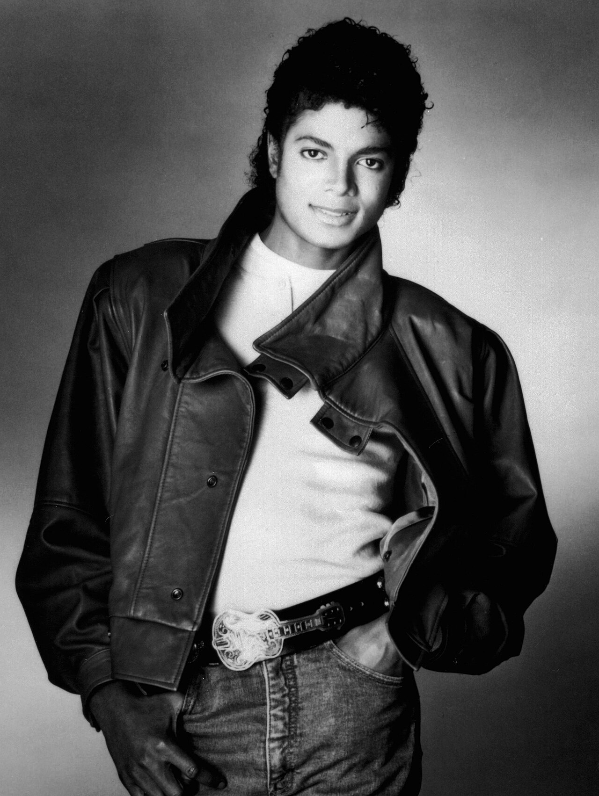
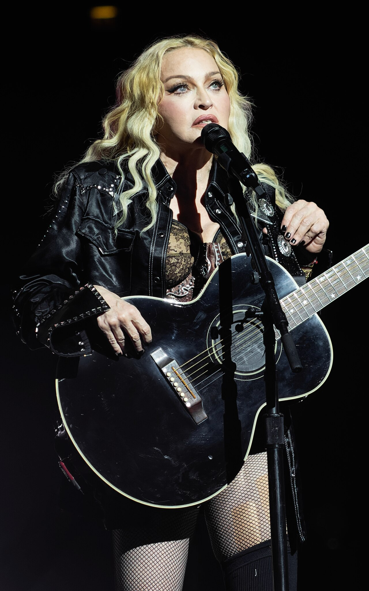
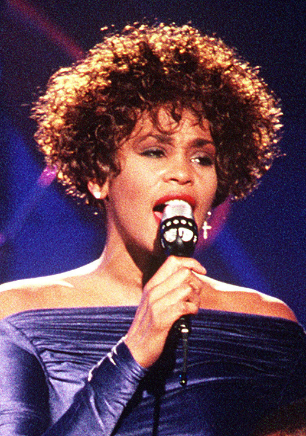
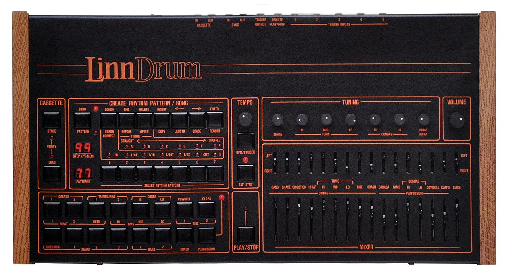
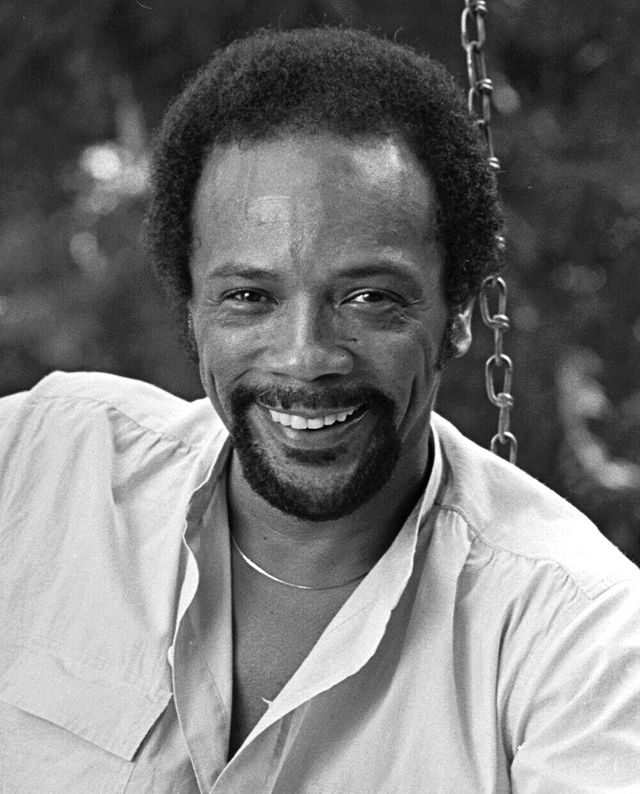

Commercial Pop & The Digital Revolution
The transformation of popular music from analogue tape sessions into digital precision. The 1980s ushered in digital FM synthesizers, sampled drum machines, gated reverbs, and SSL console automation, laying the blueprint for modern hit-making.
Yamaha DX7 frequency modulation, Fairlight CMI Page R sampling, and the universal MIDI protocol (1983) unifying electronic instruments.
Linn LM-1/LinnDrum EPROM digital drum samples paired with explosive SSL Listen Mic Compressor gated reverbs on snare drums.
In-line channel dynamics (compression/gating on every strip), Total Recall automation, and the legendary G-Master Bus 'Glue' Compressor.
Component 3 Specification Matrix
Commercial Pop questions test both musical analysis of pop arrangements (AO3) and deep technical understanding of 1980s hardware and modern DAW processing (AO4).
- ✔Quantized Rhythm Tracks: Grid-locked 16th-note drum programming with precise humanize/swing percentages.
- ✔Vocal Stacks & Hooks: Dense three- and four-part vocal harmony layering; pitch-perfect doubled leads and vocoder textures.
- ✔Synthetic Basslines: Layered analog/digital bass (Minimoog + DX7) providing sub-weight and percussive transient bite.
- ✔Anthemic Melodic Hooks: Clean, memorable pentatonic and diatonic melodies engineered for radio rotation ("Melodic Math").
- ✔Gated Reverb (Snare Drum): Large non-linear hall reverb tail severed abruptly by a fast-release noise gate (AMS RMX16 / SSL Listen Mic).
- ✔FM Synthesis (Yamaha DX7): Frequency Modulation of sine waves (carriers and modulators) producing glassy tine pianos and metallic chimes.
- ✔SSL Bus Compression: VCA Quad compressor on the stereo mix bus creating cohesive dynamic glue with 30ms attack and auto-release.
- ✔Vocal Pitch Correction: From Eventide H3000 micro-pitch shifting to Antares Auto-Tune (retune speed 0 robotic effect) and Melodyne formant preservation.
Sampled Drum Machines & Gated Reverb
- ✔Real Acoustic Samples: Created by Roger Linn in 1980. Unlike analogue synthesis (TR-808), the LM-1 stored digital 8-bit / 28 kHz audio samples of real drums recorded on EPROM chips.
- ✔Individual Channel Tuning & Outputs: Each drum voice had its own dedicated output jack and tuning pot, allowing engineers to route the snare and kick into external compressors and EQs.
- ✔Signature Pop Tracks: Prince – "When Doves Cry", Michael Jackson – "Thriller", a-ha – "Take On Me".
- ✔Accidental Discovery: Engineer Hugh Padgham and Phil Collins at Townhouse Studios (1979) during Peter Gabriel's sessions. Collins played drums while the talkback mic (with heavy SSL Listen Mic Compression) was engaged.
- ✔The Signal Chain: Snare Drum → Huge Digital Reverb (AMS RMX16 NonLin 2 or EMT 250) with 3–5 second decay → Noise Gate with high threshold and instantaneous release.
- ✔Acoustic Result: A gigantic, explosive burst of cavernous room sound that vanishes into total silence after 250 milliseconds, leaving the mix clean for synths and vocals.
Michael Jackson: Thriller & Bruce Swedien

The Acusonic Recording Process & Drum Perfection
"Billie Jean" Drum Sound: Ndugu Chancler played a custom acoustic drum kit mounted on a custom 8x8-foot plywood riser to eliminate floor vibrations. Swedien placed a custom canvas blanket cover over the kick drum with an internal slot for a Shure SM7 dynamic mic.
The Dual-Synthesizer Bassline: The unforgettable walking bassline was tracked by layering a Yamaha CS-80 and a Minimoog analogue synthesizer with Jackson's vocal beatboxing, producing both deep sub-bass and razor-sharp attack transients.
Swedien's Acusonic Process: To avoid high-frequency tape degradation from countless playback passes, Swedien recorded the rhythm section onto a dedicated 24-track analogue tape and never played it again until the final master mixdown!
Madonna: "Like A Prayer" & 80s Pop Production

Fusing Gospel Choir with Dancefloor Technology
Arrangement Architecture: Fuses heavy rock guitar distortion (provided by Prince) with a driving 120 BPM dance groove, Hammond B3 organ, and the soaring multi-voice power of the Andraé Crouch Gospel Choir.
Bass & Synth Orchestration: Guy Pratt performed live funk basslines alongside layered Sequential Prophet-5 and Minimoog synth bass patches, providing both organic human pocket and punchy electronic weight.
Vocal Capture: Madonna's lead vocals were tracked using a Sony C-800G valve condenser mic and compressed through a Teletronix LA-2A, producing an intimate, breathy verse delivery that explodes into full-belted choruses.
Whitney Houston: 80s Pop-Dance Grandeur

"I Wanna Dance with Somebody" (1987)
Hybrid Drum Architecture: Producer Narada Michael Walden programmed an Oberheim DMX drum machine layered with Roland TR-808 cowbells and analog handclaps, creating an exuberant 119 BPM pop-funk pulse.
Synth Brass & Tines: Featuring iconic bright synth brass stabs generated on the Roland Jupiter-8 and shimmering digital bell tones from the Yamaha DX7, defining the high-gloss late-80s radio sound.
Stereo Micro-Pitch Vocal Widening: Houston's phenomenal lead vocal was processed through an Eventide H3000 Harmonizer with subtle micro-pitch detuning (+9 cents left, -9 cents right with 15ms delay), paired with the lush hall algorithm of the Lexicon 480L digital reverb.
a-ha: "Take On Me" & Alan Tarney

Quantized Precision & 2.5-Octave Vocal Leaps
The Arpeggiated Hook: Magne Furuholmen programmed the legendary riff on a Roland Juno-60 analog synthesizer paired with a Yamaha DX7, driven by a Roland MIDI/DCB sequencer clocked to the LinnDrum.
LinnDrum Percussion Grid: Driving 169 BPM tempo anchored by LinnDrum snare and claps, heavily compressed through SSL channel strips with bright top-end shelving boost at 10 kHz.
Morten Harket's Vocal Climax: Harket delivers an astonishing vocal range, culminating in a legendary high E5 falsetto note that was tracked with zero pitch correction through a Neumann U87 and Teletronix LA-2A.
Max Martin: The Cheiron Pop Revolution

Britney Spears & The Architecture of 2000s Pop
"Melodic Math": Martin developed an exact science for hooks: vocal melodies must rhythmically interlock with the bassline, alternating between fast syncopated syllables in verses and soaring, open sustained vowels in choruses.
The Three-Note Piano Stabs: "...Baby One More Time" opens with an iconic three-note descending piano stab (C-B-A) layered with sub-bass and sampled kick, instantly seizing radio listener attention within the first 1.5 seconds.
Vocal Fry & Layering: Britney's lead vocals were heavily compressed with SSL channel compressors and meticulously tuned, introducing the modern stylized "vocal fry" and triple-tracked octave harmonies that defined millennium teen pop.
Yamaha DX7: Frequency Modulation Synthesis
Released in 1983, the Yamaha DX7 ended the reign of warm analog subtractive synths and became the best-selling synthesizer of the 1980s, heard on over 60% of billboard hits.
- ✔Operators (Not VCOs): Contains 6 digital sine wave oscillators called 'Operators', each paired with its own digital envelope generator.
- ✔Carriers vs. Modulators: When one operator (the Modulator) rapidly modulates the frequency of another (the Carrier) in the audible range, it creates complex non-harmonic sidebands (overtones).
- ✔32 Preset Algorithms: Different routing matrixes linking the 6 operators in series and parallel.
- ✔No Resonant Filters: Unlike Minimoogs, the DX7 had NO low-pass filters (VCFs); timbre brightness was controlled entirely by modulator amplitude!
- ✔E.PIANO 1 (Tine Piano): The glassy, shimmering digital electric piano heard on virtually every 1980s power ballad (Whitney Houston, Chicago, Celine Dion).
- ✔BASS 1: Sharp, percussive digital slap bass with metallic slap transients (a-ha, Kenny Loggins "Danger Zone").
- ✔TUB BELLS & MARIMBA: Inharmonic bell tones that analog synthesizers were physically incapable of reproducing accurately.
Fairlight CMI & NED Synclavier II
- ✔First Commercial Sampler (1979): Australian invention by Peter Vogel and Kim Ryrie. Cost over $30,000 (£20,000+).
- ✔Page R Step Sequencer: Revolutionized music programming; users placed notes visually on a computer monitor using a light pen.
- ✔Iconic Sample "ORCH5": Stravinsky's *Firebird* orchestra chord sampled into an 8-bit, 16 kHz hit; became the famous 1980s pop orchestral stab heard in Afrika Bambaataa, Duran Duran, and Yes.
- ✔High-Resolution 16-Bit Sampling: Supported up to 100 kHz sample rates with pristine high fidelity and massive hard-disk memory.
- ✔Direct-to-Disk Recording: Early precursor to the modern DAW, enabling multitrack audio recording directly onto magnetic hard disks.
- ✔Famous Productions: Michael Jackson's *Bad* ("Smooth Criminal" kick/snare quantization), Frank Zappa, and Trevor Horn (Frankie Goes to Hollywood).
SSL 4000 Console: Channel Dynamics & Glue
Every single channel on the Solid State Logic 4000 E/G series console featured a dedicated VCA compressor and an expander/gate. This allowed engineers to shape transient punch and eliminate bleed on all 48 multitrack channels simultaneously.
The legendary Quad stereo bus compressor placed across the master outputs. Known as "The Glue" — it compresses the entire mix with an auto-release and gentle 2:1 or 4:1 ratio, bonding separate drums, synths, and vocals into a single, cohesive commercial radio punch.
Internal computers took digital snapshots of all motorized fader positions, pot settings, and routing configurations, enabling studios to recall complex 64-channel commercial pop mixes in minutes.
1980s Hybrid Pop vs. Modern In-The-Box Pop
Essential comparative criteria for Section B extended response exam questions examining the technological shift from 1980s hardware consoles to 2000s/2020s DAW virtual production.
| Production Parameter | 1980s Hybrid Pop (Michael Jackson / Whitney / a-ha) | Modern Commercial Pop (Max Martin / Dua Lipa / Adele) |
|---|---|---|
| Recording Medium | 24-track analogue tape or early digital tape (Sony DASH 3348 48-track digital open reel). | Digital Audio Workstation (Pro Tools / Logic Pro) with 32-bit floating point processing. |
| Pitch & Timing Correction | Manual composite vocal comping from multiple takes; tape vari-speed; zero digital pitch correction. | Antares Auto-Tune and Celemony Melodyne applied to every vocal track; tight vocal alignment via VocALign. |
| Synthesis & Sampling | Dedicated external hardware: Yamaha DX7 (FM), Roland Jupiter-8 (analog), LinnDrum, Fairlight CMI. | In-the-box software plugins (Serum, Omnisphere, Kontakt) and gigabyte sample libraries. |
| Console Dynamics & Limiting | Analogue SSL 4000 console channel dynamics, outboard UREI 1176, Lexicon 480L, +4 dB analog headroom. | Brickwall digital peak limiters (FabFilter Pro-L 2, Ozone), extreme loudness war RMS levels (-7 to -5 LUFS), sidechain compression ducking. |
| Benchmark Tracks | Michael Jackson – "Billie Jean" • a-ha – "Take On Me" | Britney Spears – "...Baby One More Time" • The Weeknd – "Blinding Lights" |
Component 3 Exam Quick Reference
- ✔FM Synthesis (DX7): 6 operators, 32 algorithms, carrier/modulator frequency modulation for glassy electric pianos.
- ✔Gated Reverb: Huge hall reverb abruptly clamped by a fast-release noise gate (AMS RMX16 / SSL Listen Mic).
- ✔LinnDrum (LM-1/LM-2): 8-bit/12-bit digital acoustic drum samples stored on EPROMs with individual tunings.
- ✔Fairlight CMI: Early 8-bit digital sampler with Page R sequencer and famous "ORCH5" orchestral stab.
- ✔SSL Bus Compressor: Master stereo bus VCA compressor providing commercial dynamic "glue".
- ✔Auto-Tune: Phase vocoder pitch correction; zero retune speed produces the famous hard-tuned Cher effect.
- ✔Quincy Jones & Bruce Swedien: Michael Jackson's *Thriller*; Acusonic recording, plywood drum riser, Harrison 3232.
- ✔Hugh Padgham: Pioneer of gated reverb snare drums at Townhouse Studios (Phil Collins, Peter Gabriel).
- ✔Max Martin (Cheiron Studios): "Melodic Math", upfront vocal fry, aggressive pop hook architecture.
- ✔Trevor Horn: ZTT Records, Fairlight/Synclavier sequencing, grand orchestral pop (Frankie Goes to Hollywood).